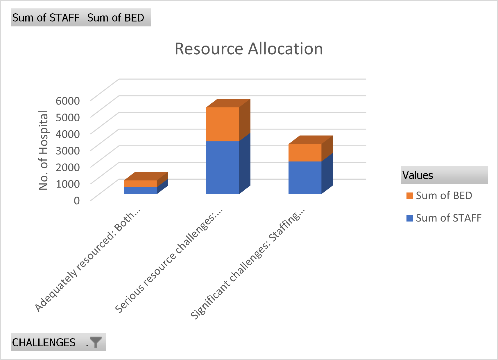

Rivers State, with a population of over 5 million people, faces critical healthcare challenges. Many of its hospitals, particularly in rural areas, are under-resourced and severely understaffed. This map seeks to highlight the unequal distribution of healthcare resources across the state and how this is affecting the well-being of its citizens.
Rivers State's healthcare system faces significant understaffing, leading to inadequate patient care.
In many hospitals, the number of medical professionals is far below the recommended standards, causing a strain on the system.
Also, many hospitals in Rivers State are operating with insufficient medical supplies and poor facilities, the commonest being a good Hospital Bed for Patients.
This map provides a comprehensive overview of the healthcare disparities across Rivers State. It allows decision-makers to pinpoint exactly where resources are most urgently needed. Areas marked in red—such as Ogbo Primary Health Centre—are critically under-resourced and should be prioritized for immediate staffing increases and infrastructure investments. Moderately resourced hospitals, marked in yellow, may require support during health emergencies to prevent them from becoming overwhelmed. While, adequately resourced hospitals, marked in green, can serve as models for what equitable healthcare in Rivers State can achieve.
The disparities in healthcare access and resources across Rivers State are clear. Now, decision-makers have the data they need to make informed choices about where to focus their efforts. By addressing the under-resourced hospitals first, the state can ensure that all citizens have access to quality healthcare. Policymakers must act now to build more healthcare facilities, allocate resources more equitably, and ensure that no community is left behind.
As Rivers State continues to grow, this map will evolve with updated data to reflect new developments in the healthcare sector. By regularly updating the staffing and resource levels, this tool can ensure that the state’s healthcare system is not just responsive to current needs but proactive in addressing future challenges. With the ability to track changes over time, policymakers will be equipped to make long-term investments that strengthen the healthcare system for generations to come.
The healthcare map of Rivers State is a critical tool for driving informed decisions and ensuring a healthier future for all its residents. By focusing on data-driven solutions, from increasing staffing levels in under-resourced areas to building new infrastructure where it is most needed, this map provides a pathway to an equitable healthcare system. The time to act is now—this data shows exactly where action must be taken to ensure that no one is left without access to essential healthcare services
The data used for creating this digital innovation map was obtained from NIGERIA Health Facility Registry (HFR) Facilities List. It's an Open Source Data